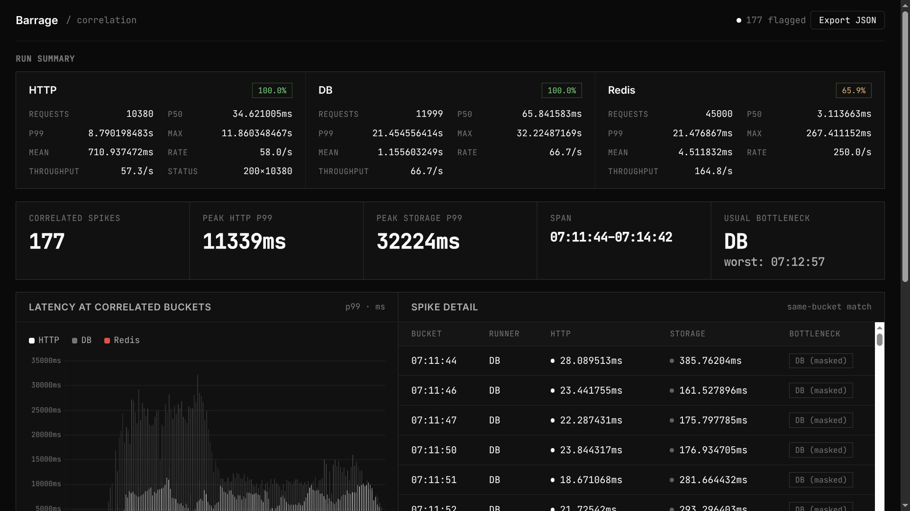
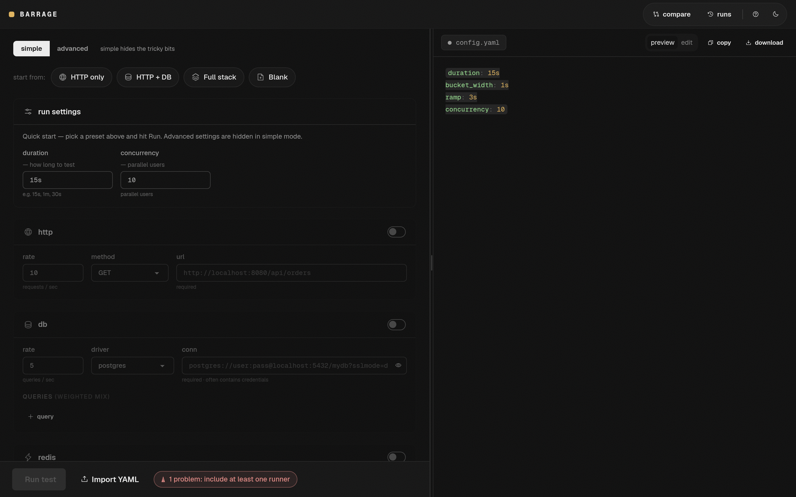

open-source CLI · load testing & performance investigation
Will your system
hold up?
Barrage load tests HTTP, databases, and Redis on the same clock so you can see what breaks, what's slow, and where the bottleneck actually is — not just that something got slow.
$ go install github.com/codetesla51/barrage/cmd/barrage@latest- One static binary
- Runs in your terminal
- No cloud, no account
See it run
Watch three layers
take fire on one clock
HTTP, DB, and Redis requests stream side by side. When a storage runner's P99 crosses its threshold in a bucket where HTTP stayed quiet, Barrage flags it ▲ db-only — a masked spike.
Simulation for illustration; the output above shows real runs.
$ barrage run -c config.yaml
barrage v0.3.5
duration 15s · bucket 1s · concurrency 10 · ramp 3s
rates http 10/s · db 5/s · redis 20/s
RUNNER REQUESTS SUCCESS RATE MEAN P50 P95 P99 MAX
http 135 100.0% 9.5/s 927µs 509µs 2.5ms 4.4ms 6.6ms
db 67 100.0% 4.5/s 12.9ms 5.5ms 69.0ms 136.2ms 136.2ms
redis 269 100.0% 17.9/s 797µs 396µs 2.3ms 3.5ms 10.6ms
correlated spikes
TIME RUNNER HTTP_P99 STORAGE_P99 NOTE
20:52:22 db <100ms 136.2ms db-only
The core idea
Most tools tell you it got slow.
Barrage helps you find out why.
A typical load tester reports one latency curve for your endpoint. When it degrades, you're left guessing: app? database? cache? Barrage drives all three layers in one process and records every layer's latencies into the same time buckets — so they can be compared directly.
Same bucket size, same unix timestamps, same run. That alignment is what makes everything else — correlation, verdicts, regression diffs — possible.
Diagnosis
Where does it break?
Every second of a run, Barrage checks each storage layer's P99 against its threshold and reads the result against what HTTP was doing at the same moment:
Correlated spike
The database spiked and HTTP crossed its budget in the same bucket. The latency jumped together — the bottleneck backs up into your users.
TIME RUNNER HTTP_P99 STORAGE_P99 VERDICT
20:52:31 db 142ms 890ms DB → HTTPMasked spike
The database spiked but HTTP stayed under budget. The bottleneck is real, just not visible to users yet. Most tools never show you this.
TIME RUNNER HTTP_P99 STORAGE_P99 NOTE
20:52:22 db <100ms 136.2ms db-only- Application slow? An endpoint that's slow while DB and Redis stay idle is an application problem — Barrage leaves those buckets unflagged.
- Database slow? Weighted read/write query mixes against Postgres, MySQL, or SQLite expose missing indexes, pool limits, and bad plans.
- Cache slow? Redis runs as a first-class runner, not an afterthought.
Scenario mode
Not just one endpoint, hit harder
Real users don't GET a single URL in a loop. Scenario mode models sequential journeys: each virtual user logs in, carries the token forward, browses, checks out — looping until the run ends.
per virtual user · loops until the run ends
scenarios:
- name: login-flow
weight: 1
steps:
- method: POST
url: http://localhost:8080/api/login
body: '{"user":"alice"}'
extract:
token: $.token
- method: GET
url: http://localhost:8080/api/me
headers:
Authorization: Bearer {{token}}
- method: GET
url: http://localhost:8080/api/checkout?token={{token}}extract pulls $.token or $.user.id out of a response and stores it on that virtual user alone.
{{var}} resolves in later URLs, bodies, and headers. A variable that never resolved stays visible as {{var}} — misconfigurations can't hide.
Realistic load
Load that looks like usage, not like a benchmark
Don't just hit your endpoint harder. Reproduce how the system is actually used:
Rates that ramp
Rates grow linearly from zero over a configurable window, instead of full force from the first request.
Mixes, not loops
One query is picked per request from a weighted list, so 80% reads / 20% writes means exactly that.
Read/write routing
Each DB query declares read or write; routing is authoritative, not guessed from SQL text.
Real parallelism
Requests go through worker pools bounded by concurrency. If the target can't keep up, throughput settles below target — on purpose.
Regression testing
A regression gate, not just a load test
Run a baseline, change code or infrastructure, run again — then diff the two JSON exports. A runner is flagged when its current P99 crosses the latency budget while its baseline was under it.
$ barrage compare --baseline base.json --current new.json --fail-on 100ms
comparing base.json -> new.json (fail-on 100ms)
RUNNER BASELINE_P99 CURRENT_P99 CHANGE VERDICT
DB 80ms 100ms +25% ok
HTTP 30ms 70ms +133% REGRESSION
Redis 20ms 22ms +10% ok
error: regression detected against --fail-on budget
$ echo $?
1- name: perf regression gate
run: |
barrage run --no-report --json current.json
barrage compare --baseline base.json --current current.json --fail-on 100msWeb UI
Prefer a browser? Barrage ships one.
barrage web starts a local web UI on localhost:7676:
build configs with forms instead of YAML, edit and preview config files,
launch runs, and read the story-style report — all without leaving the browser.

Scope
Focused on purpose
Barrage doesn't try to be everything. It does one job well:
Load test the system you own.
Find the bottleneck.
Understand the result.
narrow on purpose — that's the point
What it is
- One Go binary, entirely CLI-driven
- Postgres, MySQL, and SQLite built in — any database/sql driver can be linked
- Spike correlation with bottleneck verdicts
- Sequential user-journey scenarios
- Self-contained HTML reports, JSON exports, CI gating
What it isn't
- A browser or E2E testing framework
- A WebSocket / streaming-traffic generator
- A distributed multi-region load platform
- An observability or APM replacement
Install
Start investigating
One command to install, one to run. The report lands next to you either way.
go install github.com/codetesla51/barrage/cmd/barrage@latestbarrage run # writes report.html
barrage run -o # ...and opens it
barrage run --no-report --json results.json
barrage compare --baseline base.json \